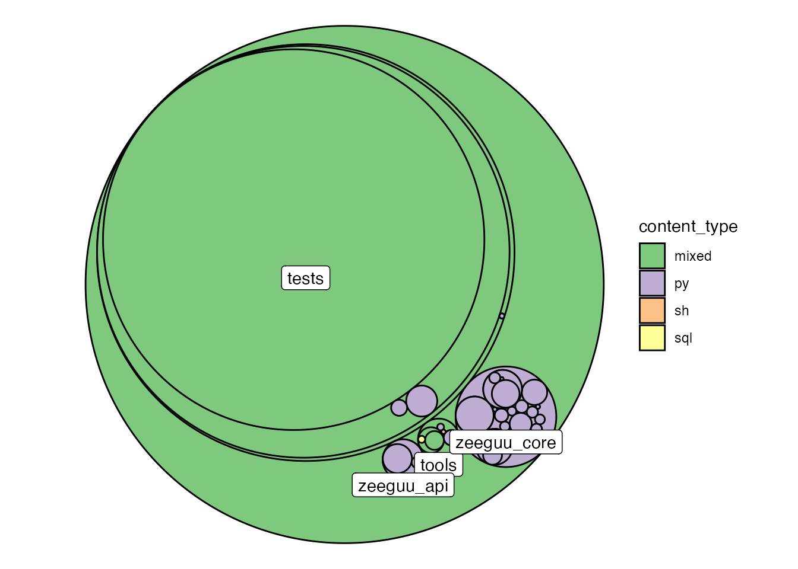

I chose to submit an automated tool to aid architectural recovery as a hand-in. The full source code and documentation are available on github. For an intro on how to use it, see the last section, Reproduction.
If we look at a software repository as a data source, we have two obvious tree structures, the abstract syntax tree (AST) for script files, and the file hierarchy of the repository as a whole. With data.tree and igraph, R has two mature packages to handle tree and graph structures. Furthermore, tidygraph and ggraph are recent packages for graph manipulation and visualization that follow the tidy data principles and layered grammar of graphic for manipulation and visualization of graphs. Last but not least, reticulate offers an interface to call python code and convert python objects to R objects. My goal for this project was test whether these packages could be combined to automatically generate insightful architectural views from python repositories. For the visualizations in this report, the file hierarchy was used directly as a graph, while the AST was used only indirectly to construct a dependency graph.
The Zeeguu-Api repository is used as an example here to demonstrate the tool. From the project website:
Zeeguu-API is an open API that allows tracking and modeling the progress of a learner in a foreign language with the goal of recommending paths to accelerate vocabulary acquisition. The API is also currently deployed as the backend for the zeeguu.org website.
I wrote my own scripts and released them under MIT license on github. Beyond the R dependencies that are specified in the DESCRIPTION file, I used maligree/python-ast-explorer for parsing python AST into data structures.
The R packages I rely most on, are:
reticulate for calling those python scripts from Rdata.tree for parsing yaml (and directories) into data.tree objects that could then be converted into igraph objectsigraph behind the scenes and for implementations of different graph algorithmstidygraph for a tidy interface to manipulate the graphsggraph for plotting graphsdplyr for data wranglingTo run the code in this document, you need to load the following packages into your R session:
library(Rchitecture)
library(dplyr)
#>
#> Attaching package: 'dplyr'
#> The following objects are masked from 'package:stats':
#>
#> filter, lag
#> The following objects are masked from 'package:base':
#>
#> intersect, setdiff, setequal, unionI did a static analysis on the source code from the git repository. The first step was to download the data into a temporary directory:
temp_folder <- tempdir()
zeeguu_path <- paste0(temp_folder, "/zeeguu_api")
git2r::clone(url = "https://github.com/zeeguu-ecosystem/Zeeguu-API.git",
local_path = zeeguu_path)
#> cloning into '/var/folders/t6/r8f4swn91n1cl2qw4dg80q4m0000gp/T//RtmpUYumvS/zeeguu_api'...
#> Receiving objects: 1% (50/4938), 24 kb
#> Receiving objects: 11% (544/4938), 128 kb
#> Receiving objects: 21% (1037/4938), 248 kb
#> Receiving objects: 31% (1531/4938), 296 kb
#> Receiving objects: 41% (2025/4938), 1488 kb
#> Receiving objects: 51% (2519/4938), 1536 kb
#> Receiving objects: 61% (3013/4938), 1600 kb
#> Receiving objects: 71% (3506/4938), 1648 kb
#> Receiving objects: 81% (4000/4938), 1712 kb
#> Receiving objects: 91% (4494/4938), 2479 kb
#> Receiving objects: 100% (4938/4938), 2541 kb, done.
#> Local: master /private/var/folders/t6/r8f4swn91n1cl2qw4dg80q4m0000gp/T/RtmpUYumvS/zeeguu_api
#> Remote: master @ origin (https://github.com/zeeguu-ecosystem/Zeeguu-API.git)
#> Head: [70ae25e] 2021-05-25: Update student.pyAs stated previously, my aim was to develop an automatic tool. Thus, the only knowledge inference I used was that I knew from lectures that it is a python project. As can be seen from the code below, the tool can be used iteratively to fine tuning visualizations based on learnings.
In my case, I realized that html files and the tests directory are not architecturally relevant after an initial exploration.
The content_table function generates a table of content from the repository:
Which file types occur most often and which files take most of the space?
folder_contents <- content_table(zeeguu_path, include_folders = FALSE, temp_folder)dplyr verbs can then be used to summarize that table:
folder_contents %>%
mutate(
file_type = forcats::fct_infreq(file_type)
) %>%
group_by(file_type) %>%
summarise(
n_files = n_distinct(file_name),
file_size_sum = sum(size, na.rm = TRUE),
file_size_median = median(size)
) %>%
mutate_if(is.numeric,round) %>%
knitr::kable()| file_type | n_files | file_size_sum | file_size_median |
|---|---|---|---|
| py | 240 | 678953 | 1390 |
| sql | 14 | 7094 | 350 |
| html | 12 | 4029432 | 148902 |
| sh | 6 | 1448 | 117 |
| md | 2 | 3632 | 1816 |
| txt | 2 | 832 | 416 |
| cfg | 1 | 439 | 439 |
| Dockerfile | 1 | 2828 | 2828 |
| example | 1 | 317 | 317 |
| LICENSE | 1 | 1097 | 1097 |
| rss | 1 | 3941 | 3941 |
| SQL | 1 | 4125 | 4125 |
| wsgi | 1 | 740 | 740 |
From this table we can see that:
While the table above gives some first indications, we loose most of the structural information through this aggregation. The following visualization aims to complement that. The path hierarchy of the repository is visualized in a circle-pack layout with fill color indicating the file type of the folder contents. First level subfolders are labelled for a better understanding.
visualize_folder_type_and_size(zeeguu_path, path_prefix = temp_folder)
#> Non-leaf weights ignored
#> Warning: Ignoring unknown parameters: check_overlap
This view shows that Zeeguu_core and Zeeguu_api are the two only pure python folders. tools contains the aformentioned sql scripts and most of the html is located in actually just located in the tests.
To improve the visualizations, we zoom in on the architecturally relevant content, by excluding the tests folder.
visualize_folder_type_and_size(zeeguu_path, path_prefix = temp_folder,
.ignore_regex = "^zeeguu_api/tests")
#> Non-leaf weights ignored
#> Warning: Ignoring unknown parameters: check_overlapThis view shows that most of the python code is organized in the zeeguu_core and zeeguu_api folders and that those are pure python folders with a nesting of up to two more levels of sub-folders.
I made a crude tokenizer from the ast module and used it to parse all .py files in the repository. Then I matched those tokens against the list of folder names in the repository to get a list of tokens that are (likely) dependencies. I then generated a graph, treating these mentions as edges. As it had too many nodes for a meaningful plot, I simplified the graph by aggregating the edges on a folder level. To preserve the weight information, I simply summed up the number of occurrences. I then arranged the nodes using a circular tree layout, based on the path hierarchy and encoded occurences in edge width and alpha. To make the plot more readable, I also scaled the nodes proportional to their centrality degree, counting incoming edges.
The visualization of the dependencies in the package can be seen below:
internal_dependency_graph(zeeguu_path, temp_folder, .ignore_regex = "^zeeguu_api/tests")View
The view cleary shows that zeeguu_core and more specifically model and language are heavily dependet on. One could argue that they were named properly. There is some overplotting occurring but it is still possible to look read dependencies for some of the nodes, i.e. account_management depends on the teacher module.
It is interesting that the tools module also has some dependencies. Unfortunately, these are not readable due to overplotting.
The tokenizer is very crude, I am using the ast tree as is. Unfortunately, from what I understand about python AST, this means relative paths and pythonian dot annotation (“class.method()”) are not resolved as separate tokens. Furthermore, I create an edge if the token is equal to a folder name. This results in false positives if identical names occur several times in the folder hierarchy or some folders names happen to be identical to a string in the python script that is not an import. This limits the information content of the visualizations. Future work should thus focus on improving the tokenizer.
Additionally, some more options to filter the visualizations would be useful enable more iterative use of the package, e.g. allow for the ability to only plot outgoing edges from scripts in the tools directory would enable us to understand how this component relates to the rest of the repository.
The visualizations give a first impression of the project, answering the following questions:
The full source code and documentation are available on github. To use it, you need to have R and python installed on your system, reticulate configured, and remotes installed. To use the package run the following command in an R session:
remotes::install_github("benjaminschwetz/Rchitecture")I haven’t had the possibility to test it on a Windows machine yet. I suspect that there might be some issues compared to macOS/Linux since this software is relying heavily on parsing absolute file paths as strings